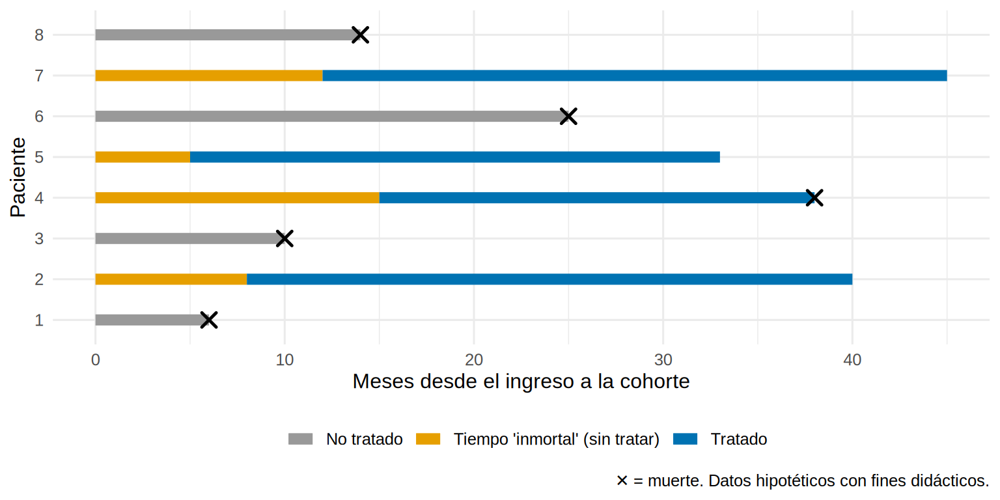

La pregunta de esta herramienta:¿cuándo empieza el tiempo cero y cuándo empieza el tratamiento?
Nota🩺 Escenario
Un estudio de cohorte concluye: “Los pacientes con ERC avanzada que recibieron iSGLT2 durante el seguimiento tuvieron una mortalidad 80 % menor que quienes nunca lo recibieron”. El HR es 0.2, mucho mejor que cualquier ensayo. Antes de celebrar, mira cómo se definió “tratado”: quien murió pronto no tuvo tiempo de que le recetaran nada, así que quedó clasificado como “no tratado”.
Lo que vamos a hacer
Entender el error con un dibujo de línea de tiempo y un DAG.
Simular un fármaco sin ningún efecto que, analizado mal, “reduce 80 % la mortalidad”.
Corregirlo de tres maneras y comprobar que el HR vuelve a 1.
Paso 1: el error, en una frase
El sesgo de tiempo inmortal aparece cuando a un grupo se le atribuye un periodo de seguimiento durante el cual, por cómo se definió, no podía haber tenido el evento.
El caso típico: se compara a quienes “recibieron el fármaco en algún momento” con quienes nunca lo recibieron, y el seguimiento de los tratados se cuenta desde el ingreso a la cohorte. Pero para quedar en el grupo “tratado” el paciente tuvo que sobrevivir hasta recibir la primera prescripción. Ese tiempo previo es inmortal: si hubiera muerto antes, habría quedado como “no tratado”.
Es el mismo mecanismo que vimos en 10.1, con otra puerta de entrada: el DAG muestra que sobrevivir hasta la prescripción (S) es causada por el tiempo de vida (T), y T también causa la muerte observada. Sin ninguna flecha del fármaco a la muerte, igual hay un camino abierto de “tratado” a “muerte”:
Ocho pacientes hipotéticos, seguidos desde su ingreso. Algunos reciben el fármaco a los 5, 8, 12 o 15 meses:
linea<-tibble( id =factor(1:8), inicio_tto =c(NA, 8, NA, 15, 5, NA, 12, NA), fin =c(6, 40, 10, 38, 33, 25, 45, 14), muere =c(1, 0, 1, 1, 0, 1, 0, 1))|>mutate(tratado =!is.na(inicio_tto))ggplot(linea)+geom_segment(aes(x =0, xend =ifelse(tratado, inicio_tto, fin), y =id, yend =id, color =ifelse(tratado, "Tiempo 'inmortal' (sin tratar)", "No tratado")), linewidth =3)+geom_segment(data =filter(linea, tratado), aes(x =inicio_tto, xend =fin, y =id, yend =id, color ="Tratado"), linewidth =3)+geom_point(data =filter(linea, muere==1), aes(x =fin, y =id), shape =4, size =3, stroke =1.3)+scale_color_manual(values =c("No tratado"="#999999", "Tratado"="#0072B2","Tiempo 'inmortal' (sin tratar)"="#E69F00"), name =NULL)+labs(x ="Meses desde el ingreso a la cohorte", y ="Paciente", caption ="✕ = muerte. Datos hipotéticos con fines didácticos.")+theme(legend.position ="bottom")

Los pacientes tratados (2, 4, 5 y 7) tienen una barra amarilla: el tramo inicial donde estaban vivos pero sin tratamiento. El análisis “ingenuo” lo cuenta como tiempo de tratado; en ese tramo nadie puede morir, porque quien hubiera muerto habría sido clasificado como no tratado. Resultado: el grupo tratado acumula tiempo “a salvo” y su tasa de mortalidad cae sin que el fármaco haga nada.
Paso 3: simulación con la verdad conocida
Simulamos 20 000 pacientes. La verdad: el fármaco no tiene ningún efecto (HR = 1). Cada paciente tiene un tiempo hasta la muerte y un momento en que se le prescribiría el fármaco, pero solo lo recibe si sigue vivo en ese momento.
library(survival)set.seed(10)n<-20000T_muerte<-rexp(n, rate =0.02)# meses hasta la muerte (mediana ~35); sin efecto del fármacoS_inicio<-rexp(n, rate =0.05)# momento en que se prescribiría el fármacodatos<-tibble(id =1:n, T_muerte, S_inicio)|>mutate( seguimiento =pmin(T_muerte, 60), muerte =as.integer(T_muerte<=60), tratado =as.integer(S_inicio<T_muerte&S_inicio<60)# solo si está vivo cuando se prescribe)table(datos$tratado)
0 1
5867 14133
El resultado “feo”: “alguna vez” frente a “nunca”
naive<-coxph(Surv(seguimiento, muerte)~tratado, data =datos)hr_naive<-exp(c(HR =coef(naive), confint(naive)))hr_naive
HR.tratado
0.2089929 0.2017007 0.2165486
El HR es 0.21: ¡79 % menos de mortalidad para un fármaco que no hace nada! La explicación: el 100 % de los “tratados” sobrevivió al menos hasta recibirlo. Cuánto tiempo “inmortal” hay en el grupo tratado:
Una proporción importante del seguimiento de los tratados es tiempo sin riesgo de morir (aquí 31 %). En un estudio real de estatinas y progresión de la diabetes (Levesque et al., BMJ 2010, material de la clase del autor), el tiempo inmortal fue el 68 % del seguimiento de los usuarios; al corregirlo, el aparente efecto protector (HR 0.74) se invirtió (HR 1.97), probablemente por confusión por indicación. Cuanto más tiempo inmortal, mayor el sesgo, y puede ser mucho más grande que el de la confusión.
Paso 4: tres formas de corregirlo
Opción 1: la exposición como variable que cambia con el tiempo
Cada paciente aporta tiempo no expuesto hasta su primera prescripción y tiempo expuesto después. Se logra con tmerge(), que “parte” a cada paciente en tramos:
tv<-coxph(Surv(tstart, tstop, evento)~expuesto, data =d_tv)hr_tv<-exp(c(HR =coef(tv), confint(tv)))hr_tv
HR.expuesto
1.0209600 0.9799348 1.0637027
Cada fila es un tramo del paciente (tstart, tstop], con expuesto = 0 antes de la prescripción y 1 después. El HR ahora es 1.02, la verdad. El tiempo previo a la prescripción se asigna al grupo “no expuesto”, donde sí puede morir.
Opción 2: análisis de landmark
Se fija un punto de corte (por ejemplo, 6 meses). Solo se incluyen los pacientes vivos a los 6 meses, se clasifica la exposición según lo ocurrido hasta ese momento y el seguimiento empieza a los 6 meses:
lm6<-datos|>filter(seguimiento>6)|>mutate(trat_6m =as.integer(S_inicio<=6&tratado==1), t =seguimiento-6)lm_fit<-coxph(Surv(t, muerte)~trat_6m, data =lm6)hr_lm<-exp(c(HR =coef(lm_fit), confint(lm_fit)))hr_lm
HR.trat_6m
1.043200 1.001105 1.087065
También cerca de la verdad (HR 1.04). El landmark es simple de explicar, pero pierde a quienes empiezan después del corte y depende de la fecha elegida.
Opción 3 (la mejor): alinear el tiempo cero con el inicio del tratamiento
En el diseño de ensayo objetivo (target trial, Cap. 12), el tiempo cero es el momento en que el paciente cumple los criterios y se asigna a una estrategia (empezar o no empezar). Los tratados empiezan el seguimiento cuando inician el tratamiento, y a los no tratados se les asigna un tiempo cero comparable. El tiempo inmortal desaparece por diseño.
Los análisis frente a la verdad (HR = 1):
tibble(analisis =c("Ingenuo: 'alguna vez' vs. 'nunca'", "Exposición dependiente del tiempo", "Landmark a 6 meses", "Verdad"), HR =c(hr_naive[1], hr_tv[1], hr_lm[1], 1))|>mutate(HR =round(HR, 2))
# A tibble: 4 × 2
analisis HR
<chr> <dbl>
1 Ingenuo: 'alguna vez' vs. 'nunca' 0.21
2 Exposición dependiente del tiempo 1.02
3 Landmark a 6 meses 1.04
4 Verdad 1
Trampas frecuentes
Advertencia⚠️ Señales de alerta al leer un artículo
La exposición se define como “uso en algún momento del seguimiento” o “uso durante el estudio”.
El tiempo cero es la entrada a la cohorte (diagnóstico, alta) y no el inicio del tratamiento.
Efectos demasiado buenos (HR 0.2-0.5) para fármacos de beneficio modesto.
Los autores no explican cómo clasificaron a quienes murieron antes de recibir el tratamiento.
El mismo error aparece con “cumplidores” (asistir a todas las sesiones de diálisis, adherencia sostenida): para “cumplir hasta el final” hay que sobrevivir hasta el final.
Importante🎯 En resumen
El tiempo inmortal es un periodo en que, por cómo se definió el grupo, no puede haber evento: hace parecer protectora una exposición sin efecto.
Se evita alineando el tiempo cero con el inicio del tratamiento, tratando la exposición como dependiente del tiempo (tmerge) o con un análisis de landmark.
Ante un HR “demasiado bueno”, sospecha primero del tiempo inmortal. Pregunta: ¿cuándo empieza el tiempo cero y cuándo el tratamiento?
Ejercicio
Aumenta la velocidad de prescripción (rate = 0.15) en la simulación. ¿El sesgo ingenuo aumenta o disminuye? ¿Por qué?
En el análisis de landmark, prueba cortes a 3, 6 y 12 meses. ¿Cambia el HR? ¿Qué pierdes con un corte tardío?
Dibuja la línea de tiempo de 8 pacientes de tu servicio: ¿dónde está el tiempo cero de cada uno?